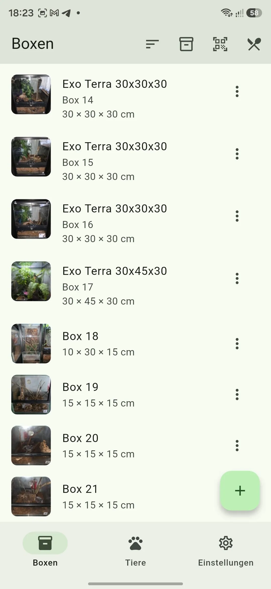
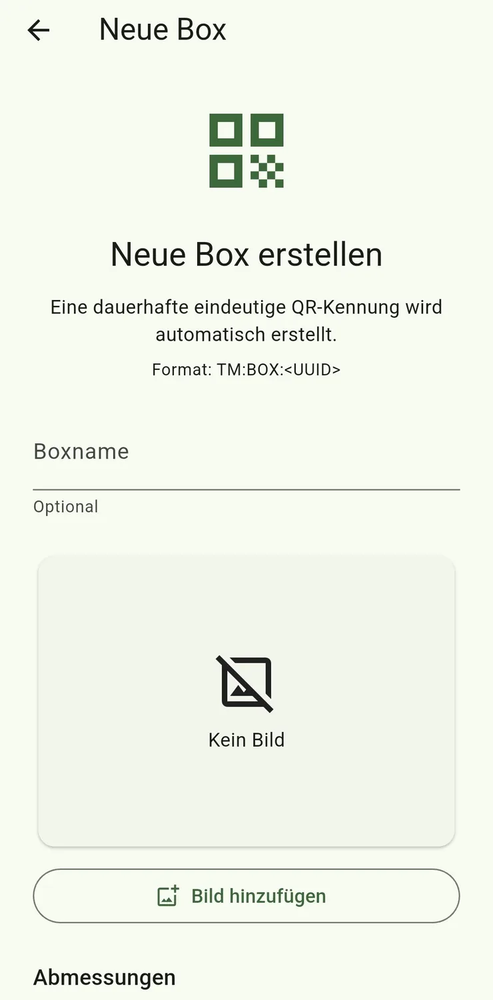

Box anlegen
Öffne Boxen und tippe auf +. Hinterlege einen Namen, Abmessungen, optional ein Bild und weitere Informationen. Nach dem Speichern erhält die Box automatisch eine eindeutige QR-Kennung.
Tipp: Ein aussagekräftiges Bild erleichtert später die visuelle Zuordnung – besonders bei größeren Beständen.

